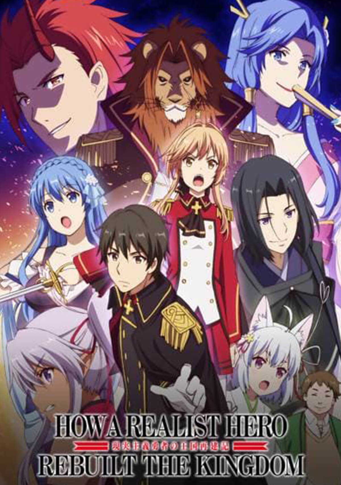

|  |
|---|
|
Description:
Souma Kazuya is called as a hero into a world in which the demon king has taken over a fifth of the country. The king hands him over the throne after presenting his plans to strengthen the military and agriculture. Souma, who is now on the throne, experiences various adventures together with talented companions whom he has gathered. Synopsis:Based on the novel Genjitsu Shugi Yuusha no Oukoku Saikenki by Dozeumaru . The story centers on Souma Kazuya , a young man who finds himself transported to another world. When he arrives, he discovers a country on the verge of disappearance between famine, poverty and the risk of invasion. This is how Kazuya proposes a plan to the King which aims to strengthen the country economically and militarily speaking. However, after having discussed it for two whole days with the King, the latter suddenly ceded his throne to him and offered him the hand of his daughter. In order to support him in his plan, Kazuyaappeals to anyone with a talent who can be of use to the country. To decide between the many candidates, it organizes tournaments in the different categories. At the end of these tournaments, five people meet before the King. Will Kazuya succeed in saving the country before it falls further into chaos? |
| Title: | Genjitsu Shugi Yuusha no Oukoku Saikenki |
|---|---|
| English Title: | How a Realist Hero Rebuilt the Kingdom |
| Japanese Title: | 現実主義勇者の王国再建記 |
| Synonym: | Re:Construction the Elfrieden Kingdom Tales of Realistic Brave, A Realist Hero's Kingdom Restoration Chronicle |
| Genre: | Action, Fantasy, Harem, Magic, Military, Romance |
| Adaptation: | Genjitsu Shugi Yuusha no Oukoku Saikenki (Light Novel) |
| Status | Airing |
| PSK: |

|
| Season | Start: Summer 2021 End: Summer 2021 |